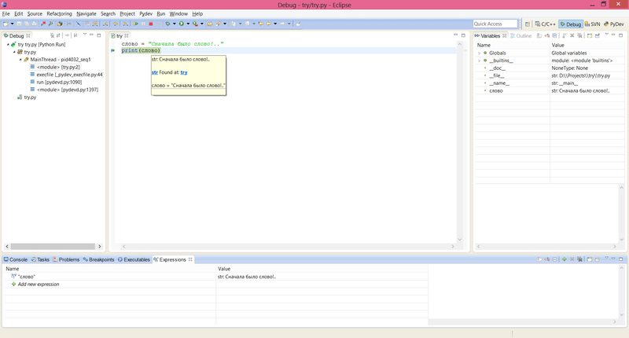
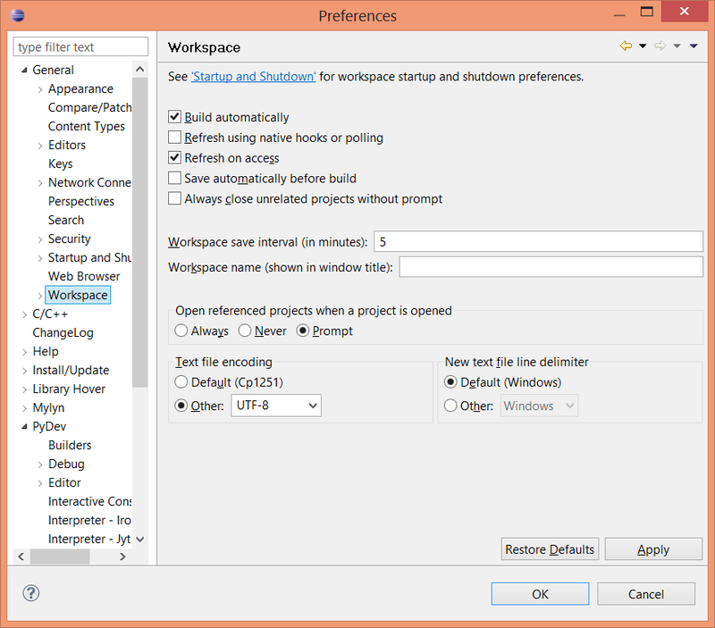
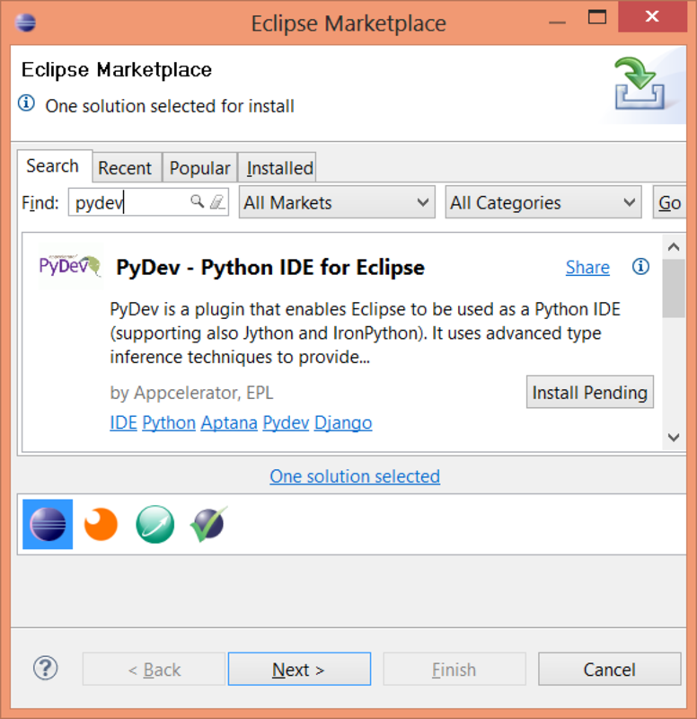
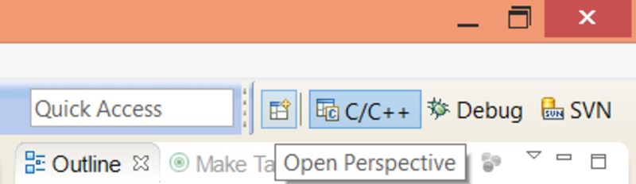
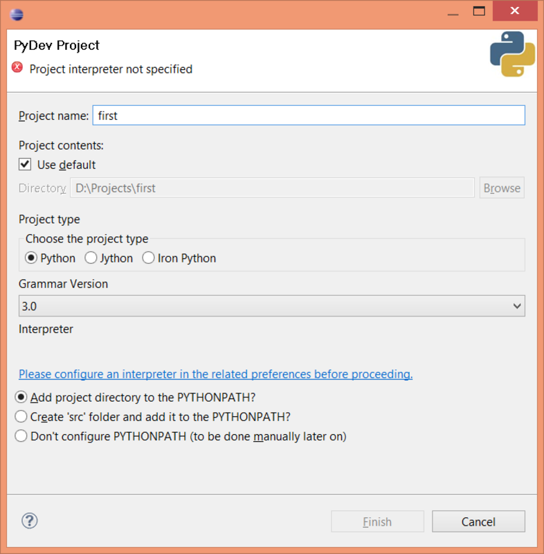
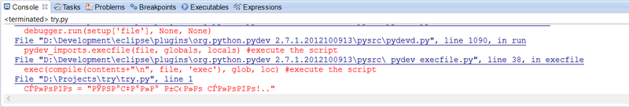
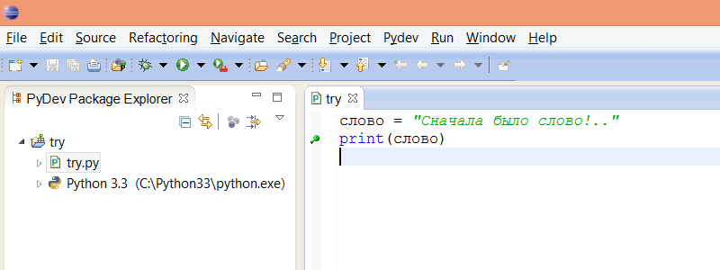

Разработка → Настраиваем Eclipse PyDev под отладку Python 3.x с честным юникодом и кириллицей
Программирование*, Python*, Eclipse*
Однажды, холодным зимним вечером, я внезапно вспомнил, что не поделился простым секретом, как добиться простого питоновского счастья за пределами ASCII резервации в такой замечательно-бесплатной IDE как Eclipse с плагином PyDev. Причём счастья с отладкой и честным юникодом, что означает следующее: если вы назвали свою переменную кириллицей, вы сможете посмотреть у неё значение, поставив breakpoint, написать пару строк текста по-русски и у вас ничего не отвалится.
Да-да, уважаемый читатель, Eclipse PyDev не очень-то дружит с символами за пределами 0x7F и отладка очень любит отваливаться всякий раз при попытке прочитать значение кириллической переменной. Да какое там, простое наведение мышкой на юникодовый символ приводит к фатальным последствиям при отладке кода написанного на Python 3.x (UTF-8). Если же настройки вашей файловой системы отличаются от UTF-8, поздравляю, вы не сможете даже запустить ваш скрипт. Я имею в виду именно то, что например под Windows ваш замечательный скрипт с единственным словом по-русски просто выведет из строя PyDev.
Возможно я перестарался, сгущая краски, не пугайтесь, починить это в состоянии мы сами, просто прочитав эту небольшую инструкцию. В награду мы получим бесплатное средство разработки, довольно удобное, фантастически гибкое в настройках и усовершенствовании, вплоть до разработки на нескольких языках, со встроенным инструментом версионирования.
Под катом инструкция и неприличных размеров картинки.
Готовим космодром
Наш будущий универсальный звездолёт под названием Eclipse скачивается без средств разработки для Python, для этого существует расширение Eclipse PyDev, его мы поставим сразу после скачивания. Выберите со страницы загрузки понравившуюся версию Eclipse. Я бы рекомендовал «Eclipse IDE for C/C++ Developers», всё-таки Python очень здорово работает с расширениями на C/C++, да и сам прекрасно встраивается в С++ код благодаря библиотеке Boost.Python.
По завершении скачивания, распакуйте папку eclipse в любое место на компьютере, согласующееся с вашим фэншуем.
Просто запустите eclipse\eclipse, скорее всего он просто запустится, но если вы до этого никогда не использовали JDK, он его затребует для работы, без него не запустится. JDK — это Java Development Kit, скачивается с сайта Oracle, с этой страницы загрузки.
При запуске Eclipse спросит куда ему сохранять все проекты, укажите ему ваш Workspace (запомните это слово, вам его ещё в меню настроек искать). Наконец загрузившись, это дитя Java покажет вам свой Welcome, не пугайтесь, просто закройте его.
Как-то вот так всё это будет выглядеть в конце нашего экскурса:

Ну а пока давайте начнём с самого главного, с того из-за чего сыр-бор — с кодировки. Самое главное убедиться, что ваше рабочее место по умолчанию настроено на кодировку UTF-8.
Идём в меню Window => Preferences выбираем там General => Workspace в самом низу страницы нужно указать параметр "Text file encoding", если он не выставлен в UTF-8 по умолчанию, пропишите это строковое значение в поле Other, как показано на картинке:

Итого, у нас есть всё, чтобы начать разрабатывать приложение. Ах нет, не всё, Python писать и отлаживать по-прежнему не на чем. Нужен плагин PyDev.
Готовимся к приземлению на Python-3
Установка PyDev — пожалуй самая простая часть работы по настройке рабочего места.
Идём в меню "Help => Eclipse Marketplace..." набираем в строке поиска PyDev и нажимаем в найденом плагине кнопку [Install]

После чего со всем соглашаемся, ждём загрузку и установку, потом нам предложат перезапустить Eclipse, почему бы и перезапустить, раз просят.
После установки нам предлагается поиграть в прятки с установленным окружением — перспективой (Perspective) для разработки в Python, я подскажу где его найти, заодно сразу переключимся на перспективу PyDev. В правом верхнем углу есть ряд из маленьких кнопок переключения перспективы, обычно там что-то вроде C++, Debug, Java, SVN и ма-а-аленького плюсика слева от них, вот на него-то и надо нажать, чтобы добавить перспективу PyDev.

В открывшемся окне Open Perspective выбираем окружение для разработки Python — свежеустановленный PyDev.
Мы должны сразу после выбора переключиться на перспективу PyDev, в меню и в основном окне должны произойти некоторые изменения, которые вы возможно не сразу заметите, но они переключают создание новых проектов и файлов и процесс отладки в режим разработки на Python.
Почти что всё. Мы готовы к настройке и запуску своего первого проекта на Python 3 в Eclipse PyDev.
Первый проект
Ну что ж, давайте его создадим, наш первый проект.
Меню File => New => PyDev Project, заполняем имя, выбираем версию Python 3.x и теперь самое главное: нужно указать где расположен интерпретатор Python, для этого нужно нажать на ссылку «Please configure an interpreter...»

Всё, можем нажимать Finish.
Наш первый скрипт
Настало время попытаться запустить наш скрипт, а заодно узнать для чего предназначена данная статья.
Меню «File => New => PyDev module», либо просто правой кнопкой по проекту «New => PyDev module», даём нашему новому скрипту имя и нажимаем Finish.
Файл скрипта автоматически создастся в кодировке, указанной в настройках Workspace, которые мы задали в самом начале. В Python 3.x весь код по стандарту в кодировке UTF-8.
Для проверки поддержки юникода пишем такой скрипт:
слово = "Сначала было слово!.."
print(слово)
Самое время его отладить!
Жмакаем на зелёного жука (De-Bug) или просто F11. Выбираем Python Run (это явно не юнит-тест). Поехали…
… Приехали!..

Хе-хе, зато бесплатно!
Смотрим в файл где мы свалились и видим банальный косяк с кодировкой в _pydev_execfile.py
Откройте его по ссылке в стектрейсе консоли Eclipse.
Первая же строчка в файле как бы намекает, что для Python 3.x здесь ещё не валялся не то что конь, тут даже пони не прилёг.
Вот как выглядит наш замечательный файл:
#We must redefine it in Py3k if it's not already there
def execfile(file, glob=None, loc=None):
if glob is None:
import sys
glob = sys._getframe().f_back.f_globals
if loc is None:
loc = glob
stream = open(file, 'rb')
try:
encoding = None
#Get encoding!
for _i in range(2):
line = stream.readline() #Should not raise an exception even if there are no more contents
#Must be a comment line
if line.strip().startswith(b'#'):
#Don't import re if there's no chance that there's an encoding in the line
if b'coding' in line:
import re
p = re.search(br"coding[:=]\s*([-\w.]+)", line)
if p:
try:
encoding = p.group(1).decode('ascii')
break
except:
encoding = None
finally:
stream.close()
if encoding:
stream = open(file, encoding=encoding)
else:
stream = open(file)
try:
contents = stream.read()
finally:
stream.close()
exec(compile(contents+"\n", file, 'exec'), glob, loc) #execute the script
Критическим взглядом окидываем поле боя и находим несколько косяков:
1. Для Python 3.x encoding всегда будет None, что фатально в Windows где настройки файловой системы далеко не UTF-8, да и вообще это неправильно требовать первой строкой указание кодировки от файла с кодом Python 3, который всегда UTF-8.
Правится банальной проверкой sys.version_info[0] >= 3
2. Для файлов начинающихся с BOM не обрезается первый символ, а compile очень чувствителен ко всему лишнему, он банально не поймёт символов в начале выполнения скрипта.
Не вдаваясь в тонкости, можно поправить всё на скорую руку например вот так:
def execfile(file, glob=None, loc=None):
import sys
if glob is None:
glob = sys._getframe().f_back.f_globals
if loc is None:
loc = glob
if sys.version_info[0] >= 3:
encoding = 'utf-8'
else:
stream = open(file, 'rb')
try:
encoding = None
#Get encoding!
for _i in range(2):
line = stream.readline() #Should not raise an exception even if there are no more contents
#Must be a comment line
if line.strip().startswith(b'#'):
#Don't import re if there's no chance that there's an encoding in the line
if b'coding' in line:
import re
p = re.search(br"coding[:=]\s*([-\w.]+)", line)
if p:
try:
encoding = p.group(1).decode('ascii')
break
except:
encoding = None
finally:
stream.close()
if encoding:
stream = open(file, encoding=encoding)
else:
stream = open(file)
try:
contents = stream.read()
if sys.version_info[0] >= 3 and contents.startswith('\uFEFF'):
contents = contents[1:] #Remove BOM
finally:
stream.close()
exec(compile(contents+"\n", file, 'exec'), glob, loc) #execute the script
После этого маленького фикса у нас всё просто замечательно выполняется. Осталось рассказать про отладку и маленький параметр, без которого наш звездолёт не взлетит дальше выполнения кода.
Режим отладки и юникод
Ставим breakpoint на второй строке, будем смотреть содержимое переменной слово — делается это двойным кликом по области слева от нужной строчки кода.

Запускаем режим отладки по F11 либо кликом на зелёную букашку в тулбаре. Встаём на breakpoint.
(Кстати, лирическое отступление, при переходе в Debug-перспективу, уделите пару минут, перетащите всё ненужное вниз.)
Теперь пробуем сделать следующее: наведите на переменную слово курсор мыши. Вам ведь наверняка интересно что внутри?..
… ох, снова упали!.. В этот раз совсем загадочно — работа скрипта завершилась, а вот сам процесс отладки умер в мучениях.
Зато бесплатно!..
Хотя здесь уже всё довольно просто — идём в eclipse.ini по соседству от исполняемого модуля и добавляем там строку:
-Dfile.encoding=UTF-8
Сохраняем инишку, перезапускаем Eclipse, чтобы изменения вступили в силу.
Всё.
Можете теперь отлаживаться сколько угодно!
Называйте переменные хоть кириллицей, хоть на хинди, именуйте по-русски классы и методы, всё что угодно!
Я не говорю что это правильно, я просто даю вам эту возможность, точнее возвращаю то, что отнято прожорливым бесплатным Eclipse PyDev.
Полезные ссылки
Я решил всё же дать ссылку на архив с настроенным на разработку в Python 3.x Eclipse PyDev: eclipse.7z (~171 MB)
После скачивания придётся всё равно сделать следующее:
1) — перенастроить папку Workspace
2) — настроить в Window => Prefereces => General => Workspace кодировку UTF-8
3) — открыть перспективу PyDev (изначально будет спрятана) через Open Perspective
4) — при создании первого проекта указать местоположение интерпретатора Python
Заключение
Вы вероятно спросите меня, почему я не дал сразу, в первом же абзаце, скачать готовый архив с пропатченным Eclipse вместе с PyDev.
Я отвечу, что решил поделиться опытом несложного, но очень полезного решения, дающее впечатляющий PROFIT в разработке на Python 3.x.
Вам ничего не стоит пройти по шагам и получить отличное средство разработки, а заодно понять некоторые тонкости в работе Python 3 и разницу со старым и не всегда добрым Python 2.x.
Помните: вам незачем ограничивать себя набором ASCII и вообще ограничивать себя чем бы то ни было.
Удачи в разработке!